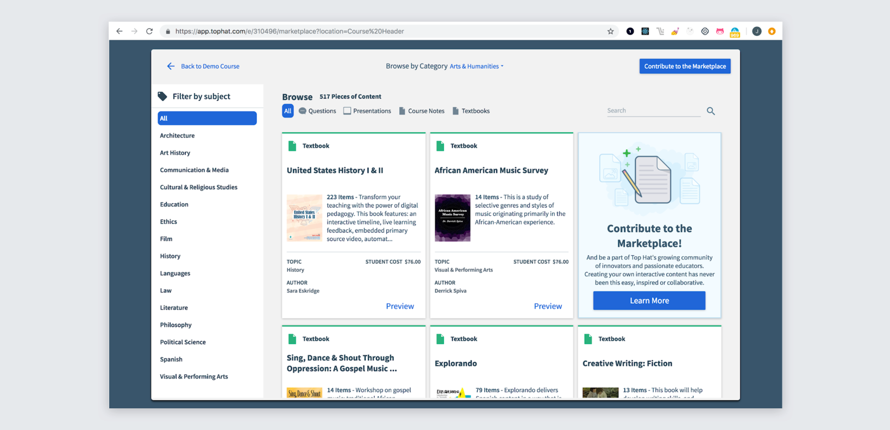
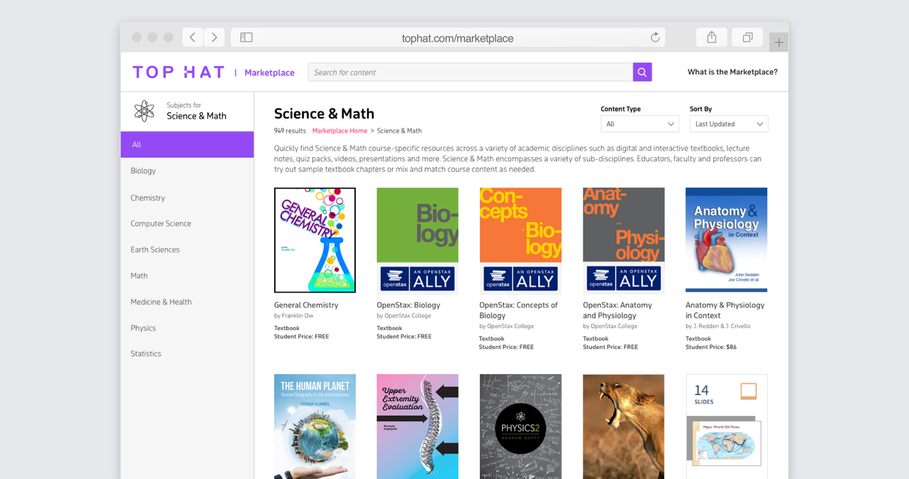
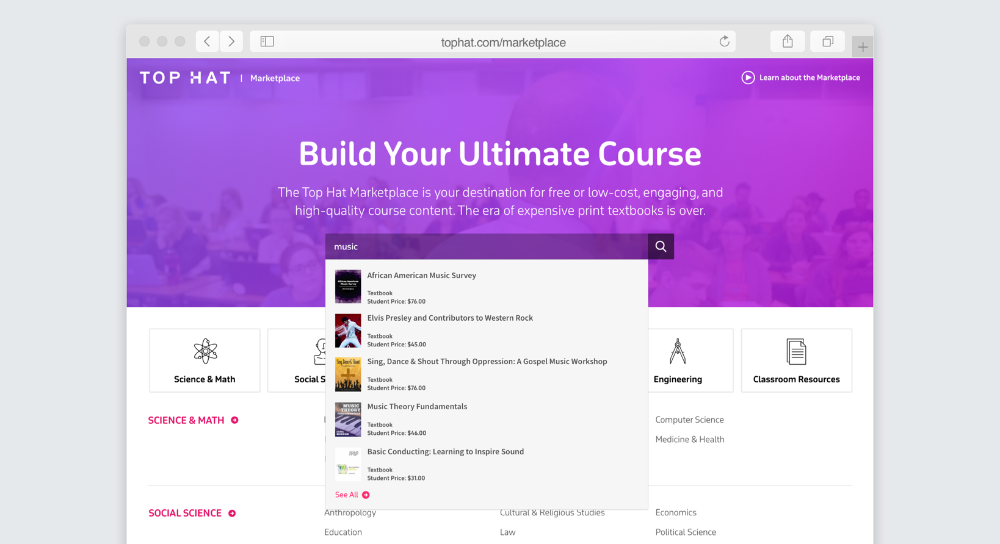
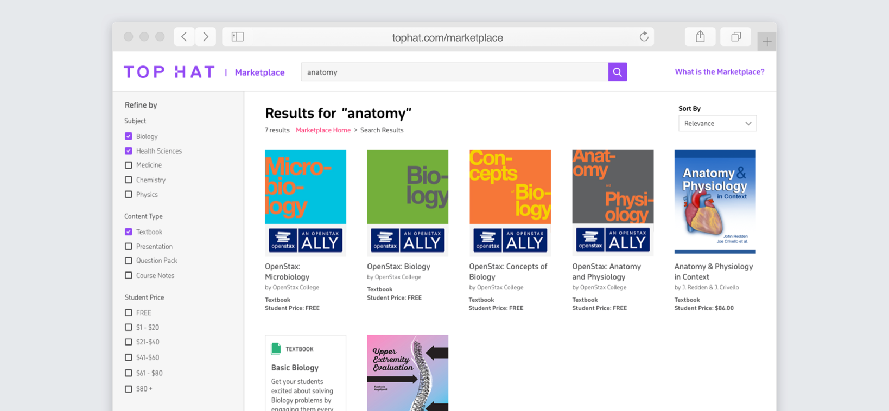
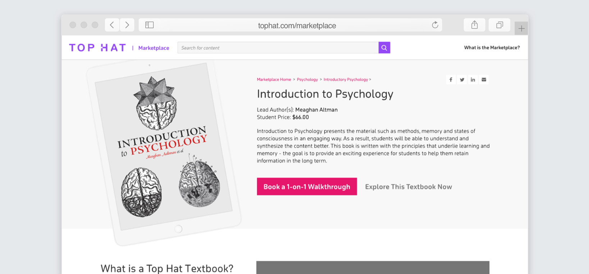
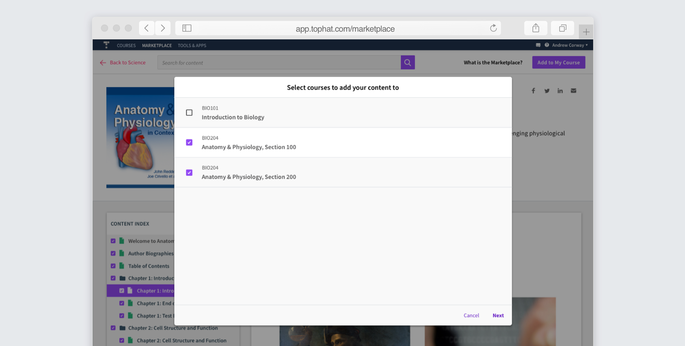
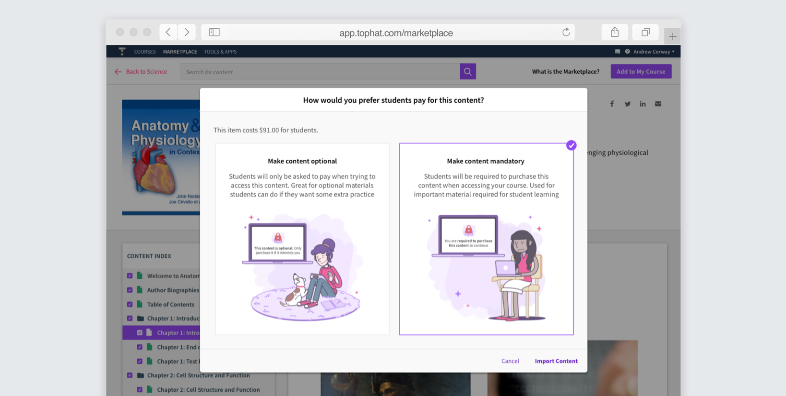
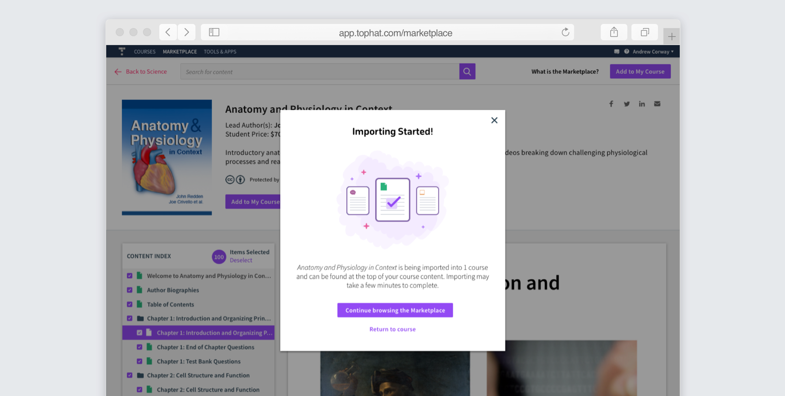
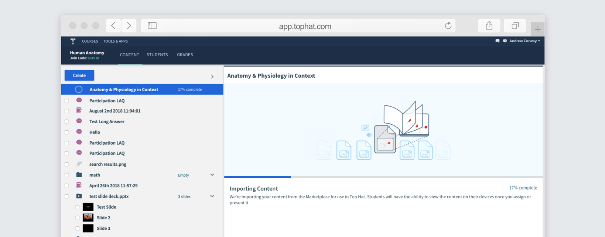
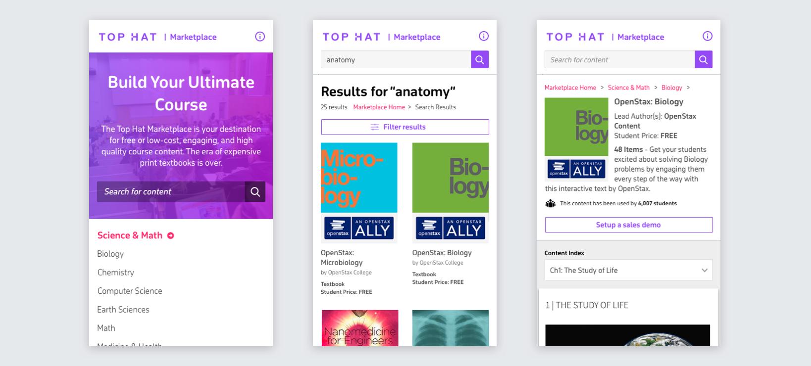

One marketplace, two audiences
Top Hat's Marketplace is where people discover textbooks, slides, question packs, and other course content. Before this project, there was an old internal marketplace for existing customers but no external marketplace for prospective customers.
Rather than maintain two separate products, the goal was to create one marketplace service that could support both acquisition and in-product content discovery.
Understanding the existing experience
I created a test plan and ran usability testing with five post-secondary educators on the existing internal marketplace. Users struggled with navigation, search was too limited, and importing content was slow and blocked the rest of the experience while it completed.

The external marketplace also had a demand-generation role, so I collaborated closely with Marketing on SEO and used analytics and heat mapping to understand how prospective customers were engaging with textbook landing pages.
Key product decisions
Professors often arrive looking for something specific, so search became one of the most prominent actions on the home page.
Subject and domain navigation was more useful than generic featured content because educators typically teach within a narrow discipline.
The external version supports preview and conversion, while signed-in customers can access and import content into their courses.
Professors should be able to choose multiple destinations, start an import, and keep working while it runs in the background.
Redesigning discovery
The new home page centers the two most useful ways to find content: search for something specific or browse by subject. This replaced featured content that often had little relevance to what an individual professor actually taught.
From a broad discipline, users can drill into more specific subject areas rather than browse one undifferentiated catalog.

Making search useful enough to rely on
Search needed to work both as an entry point and as a serious discovery tool. I designed a search-first state that made it easy to begin a query before layering in more advanced controls.

Results can then be narrowed by the dimensions educators actually care about, including subject, content type, and price.

One content page that works before and after purchase
The Marketplace content page had to serve different jobs depending on who was viewing it. For prospective customers, it needed enough information and preview content to support a decision and move them toward a demo. Existing customers could access the full content and start importing it into one or more courses.

A faster import workflow for existing customers
The old flow allowed professors to import into only one course at a time and made them wait for the entire process to finish. I redesigned the flow around batch selection and background processing.
Select multiple destination courses
Professors can choose all of the courses that need the material in a single step instead of repeating the same import workflow course by course.

Set whether the content is required
Because imported Marketplace content could be optional or mandatory for students, that choice was incorporated directly into the import setup rather than handled separately afterward.

Confirm the import immediately
Once the import begins, the user gets a clear confirmation instead of being trapped in a loading state waiting for a potentially long-running process.

Let the work finish in the background
Import progress is then visible from within the course while the user continues working. This removed the blocking wait from the core workflow.

Responsive by design
The external Marketplace needed to support discovery outside the desktop Top Hat product, so the core home, browsing, search, and content experiences were designed responsively.
